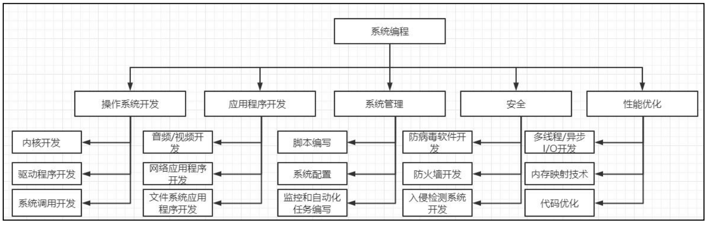
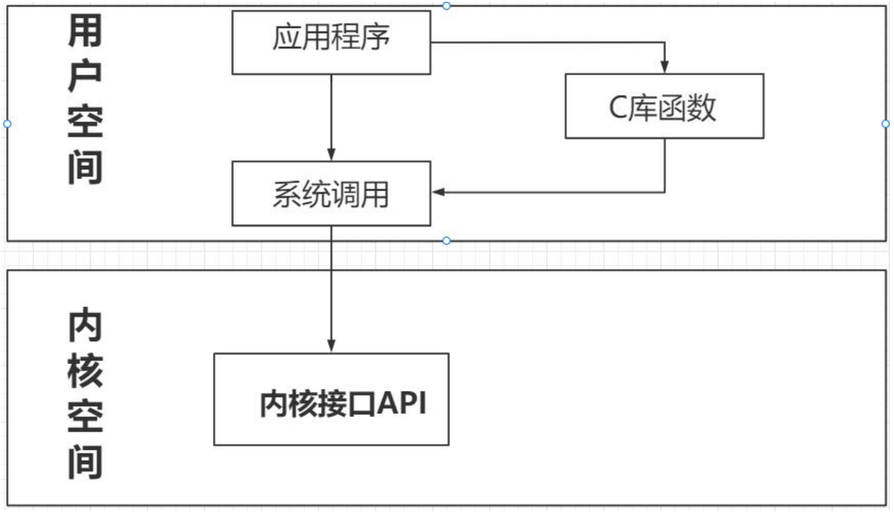
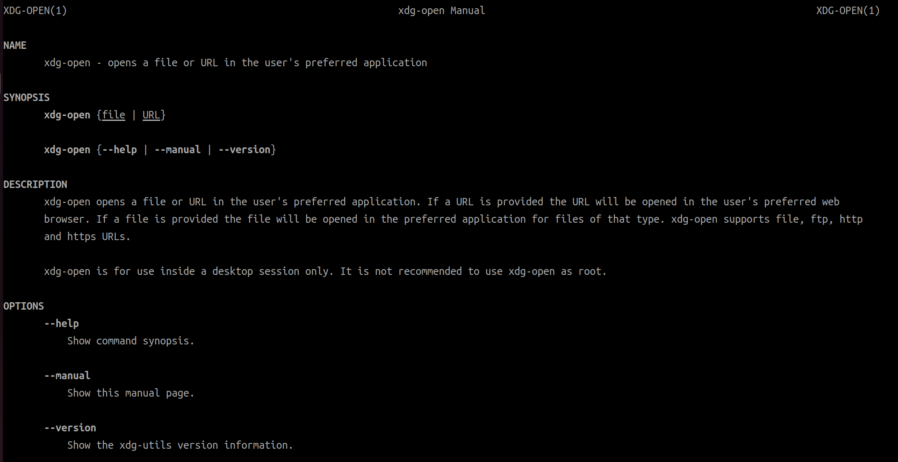

<!DOCTYPE lake>
<p data-lake-id="u4b02aa22" id="u4b02aa22"><span data-lake-id="u01ae0b35" id="u01ae0b35">使用操作系统自身提供的接口进行开发的过程就叫做系统编程</span></p><h2 data-lake-id="DGXS8" data-lake-index-type="2" id="DGXS8"><span data-lake-id="u73edc43b" id="u73edc43b">系统编程作用</span></h2><p data-lake-id="u7e8d89cb" id="u7e8d89cb"><span class="lake-fontsize-12" data-lake-id="ua69de4e5" id="ua69de4e5" style="color: rgb(0,0,0)">1</span><span class="lake-fontsize-12" data-lake-id="u0cf3dc07" id="u0cf3dc07" style="color: rgb(0,0,0)">）操作系统开发：系统编程是操作系统开发的基础，它涉及到开发和维护内核、驱动程 </span></p><p data-lake-id="ufd36a65f" id="ufd36a65f"><span class="lake-fontsize-12" data-lake-id="u08affd88" id="u08affd88" style="color: rgb(0,0,0)">序和其他底层系统软件。 </span></p><p data-lake-id="ufda509b1" id="ufda509b1"><span class="lake-fontsize-12" data-lake-id="u36799671" id="u36799671" style="color: rgb(0,0,0)">2</span><span class="lake-fontsize-12" data-lake-id="u0e5a9780" id="u0e5a9780" style="color: rgb(0,0,0)">）应用程序开发：一些应用程序需要直接访问硬件或操作系统资源，例如音频、视频、 </span></p><p data-lake-id="u682f2bda" id="u682f2bda"><span class="lake-fontsize-12" data-lake-id="ubb8f5c87" id="ubb8f5c87" style="color: rgb(0,0,0)">网络或文件系统，因此需要进行系统编程。 </span></p><p data-lake-id="u26bb9946" id="u26bb9946"><span class="lake-fontsize-12" data-lake-id="uf9f323a0" id="uf9f323a0" style="color: rgb(0,0,0)">3</span><span class="lake-fontsize-12" data-lake-id="ue5a9f8aa" id="ue5a9f8aa" style="color: rgb(0,0,0)">）系统管理：系统编程可以用于编写脚本和工具，以管理计算机系统和网络，例如配置 </span></p><p data-lake-id="u36091cd2" id="u36091cd2"><span class="lake-fontsize-12" data-lake-id="u92cd83f6" id="u92cd83f6" style="color: rgb(0,0,0)">文件、监控和自动化任务。 </span></p><p data-lake-id="ub4343dbd" id="ub4343dbd"><span class="lake-fontsize-12" data-lake-id="ubc7c4260" id="ubc7c4260" style="color: rgb(0,0,0)">4</span><span class="lake-fontsize-12" data-lake-id="u6bea1719" id="u6bea1719" style="color: rgb(0,0,0)">）安全：系统编程可以用于编写安全软件和工具，例如防病毒软件、防火墙和入侵检测 </span></p><p data-lake-id="u48ceda3b" id="u48ceda3b"><span class="lake-fontsize-12" data-lake-id="u4817e688" id="u4817e688" style="color: rgb(0,0,0)">系统。 </span></p><p data-lake-id="uc2bc0141" id="uc2bc0141"><span class="lake-fontsize-12" data-lake-id="u5bea24a0" id="u5bea24a0" style="color: rgb(0,0,0)">5</span><span class="lake-fontsize-12" data-lake-id="u7637dbb5" id="u7637dbb5" style="color: rgb(0,0,0)">）性能优化：系统编程可以用于编写优化代码，以提高程序的性能和响应速度，例如利 </span></p><p data-lake-id="u4ef39f85" id="u4ef39f85"><span class="lake-fontsize-12" data-lake-id="u21c1fdf0" id="u21c1fdf0" style="color: rgb(0,0,0)">用多线程、异步 I/O 和内存映射等技术。</span></p><p data-lake-id="u2919b4de" id="u2919b4de"></p><h2 data-lake-id="YHvtH" data-lake-index-type="2" id="YHvtH"><span data-lake-id="u25752558" id="u25752558">系统调用和C语言库函数</span></h2><p data-lake-id="u4cb2bea7" id="u4cb2bea7"></p><h2 data-lake-id="z7frO" data-lake-index-type="2" id="z7frO"><span data-lake-id="u167c95a6" id="u167c95a6">posix标准</span></h2><p data-lake-id="ud516c357" id="ud516c357"><span class="lake-fontsize-12" data-lake-id="uaf049178" id="uaf049178" style="color: rgb(0,0,0)">IEEE</span><span class="lake-fontsize-12" data-lake-id="u912d11af" id="u912d11af" style="color: rgb(0,0,0)">（电气和电子工程师协会）于 </span><span class="lake-fontsize-12" data-lake-id="ufba119b9" id="ufba119b9" style="color: rgb(0,0,0)">1988 </span><span class="lake-fontsize-12" data-lake-id="u540a306a" id="u540a306a" style="color: rgb(0,0,0)">年发布了 </span><span class="lake-fontsize-12" data-lake-id="u9d9c1fdc" id="u9d9c1fdc" style="color: rgb(0,0,0)">POSIX </span><span class="lake-fontsize-12" data-lake-id="u91300a34" id="u91300a34" style="color: rgb(0,0,0)">标准，即</span><span class="lake-fontsize-12" data-lake-id="u687d879f" id="u687d879f" style="color: rgb(0,0,0)">“</span><span class="lake-fontsize-12" data-lake-id="u01494317" id="u01494317" style="color: rgb(0,0,0)">可 </span></p><p data-lake-id="uf58f9c1d" id="uf58f9c1d"><span class="lake-fontsize-12" data-lake-id="u62014c9b" id="u62014c9b" style="color: rgb(0,0,0)">移植操作系统接口</span><span class="lake-fontsize-12" data-lake-id="ue279f6aa" id="ue279f6aa" style="color: rgb(0,0,0)">”</span><span class="lake-fontsize-12" data-lake-id="uabbe58d3" id="uabbe58d3" style="color: rgb(0,0,0)">，旨在提供一组公共的 </span><span class="lake-fontsize-12" data-lake-id="u45a96311" id="u45a96311" style="color: rgb(0,0,0)">API </span><span class="lake-fontsize-12" data-lake-id="u1d4d0831" id="u1d4d0831" style="color: rgb(0,0,0)">和规范，使得不同的操作系统可以遵循相同的 </span></p><p data-lake-id="uaecdd5fb" id="uaecdd5fb"><span class="lake-fontsize-12" data-lake-id="ub4c5abee" id="ub4c5abee" style="color: rgb(0,0,0)">标准和接口。这使得开发人员可以编写一次代码，然后在多个不同的平台上运行，从而大大提 </span></p><p data-lake-id="u82b64f1b" id="u82b64f1b"><span class="lake-fontsize-12" data-lake-id="uc35a4e12" id="uc35a4e12" style="color: rgb(0,0,0)">高了应用程序的可移植性和开发效率。</span></p><table class="lake-table" data-lake-id="irgjT" id="irgjT" margin="true" style="width: 707px" width-mode="contain"><colgroup><col width="186"/><col width="521"/></colgroup><tbody><tr data-lake-id="u06e63cc8" id="u06e63cc8"><td data-lake-id="u30fbe2cd" id="u30fbe2cd"><p data-lake-id="u6c2c99d2" id="u6c2c99d2"><span class="lake-fontsize-12" data-lake-id="u3708b8bd" id="u3708b8bd" style="color: rgb(0,0,0)"> 方面</span></p></td><td data-lake-id="u14d86533" id="u14d86533"><p data-lake-id="u77cbaa0d" id="u77cbaa0d"><span class="lake-fontsize-12" data-lake-id="ue6e133e3" id="ue6e133e3" style="color: rgb(0,0,0)"> 描述</span></p></td></tr><tr data-lake-id="u6c2c427e" id="u6c2c427e"><td data-lake-id="u8c060cec" id="u8c060cec"><p data-lake-id="u759b3ac8" id="u759b3ac8"><span class="lake-fontsize-12" data-lake-id="u2fc3c199" id="u2fc3c199" style="color: rgb(0,0,0)"> 系统调用</span></p></td><td data-lake-id="u95ef1ee4" id="u95ef1ee4"><p data-lake-id="uf8706440" id="uf8706440"><span class="lake-fontsize-12" data-lake-id="ubf3dbe50" id="ubf3dbe50" style="color: rgb(0,0,0)">进程管理、文件操作、信号处理、进程间通信等方面的操作系统接口</span></p></td></tr><tr data-lake-id="u9e43f13a" id="u9e43f13a"><td data-lake-id="ubc76f8f0" id="ubc76f8f0"><p data-lake-id="u0caac462" id="u0caac462"><span class="lake-fontsize-12" data-lake-id="u016d3373" id="u016d3373" style="color: rgb(0,0,0)">库函数</span></p></td><td data-lake-id="u28a4fbcf" id="u28a4fbcf"><p data-lake-id="udcf9ba43" id="udcf9ba43"><span class="lake-fontsize-12" data-lake-id="uce086ecc" id="uce086ecc" style="color: rgb(0,0,0)">标准 C 库函数和 POSIX 扩展库函数等 </span></p></td></tr><tr data-lake-id="u8c677249" id="u8c677249"><td data-lake-id="uea90aff1" id="uea90aff1"><p data-lake-id="u51858218" id="u51858218"><span class="lake-fontsize-12" data-lake-id="uf9aedd39" id="uf9aedd39" style="color: rgb(0,0,0)"> Shell 命令</span></p></td><td data-lake-id="u249bab15" id="u249bab15"><p data-lake-id="u1b1b15a5" id="u1b1b15a5"><span class="lake-fontsize-12" data-lake-id="udc319729" id="udc319729" style="color: rgb(0,0,0)">包括常用的命令行工具和工具箱，如文件管理、进程管理、网络管理等</span></p></td></tr><tr data-lake-id="ud8dd56bd" id="ud8dd56bd"><td data-lake-id="u2320f536" id="u2320f536"><p data-lake-id="u210e3a31" id="u210e3a31"><span class="lake-fontsize-12" data-lake-id="uf4acd2a0" id="uf4acd2a0" style="color: rgb(0,0,0)">环境变量</span></p></td><td data-lake-id="ufb5799db" id="ufb5799db"><p data-lake-id="u3f269884" id="u3f269884"><span class="lake-fontsize-12" data-lake-id="u16ddcaaa" id="u16ddcaaa" style="color: rgb(0,0,0)">定义了一系列操作系统的环境变量，包括 PATH、HOME、USER 等</span></p></td></tr><tr data-lake-id="u2db53ff1" id="u2db53ff1"><td data-lake-id="uffe092cd" id="uffe092cd"><p data-lake-id="uf7e2ad17" id="uf7e2ad17"><span class="lake-fontsize-12" data-lake-id="uda73d6ba" id="uda73d6ba" style="color: rgb(0,0,0)">标准文件</span></p></td><td data-lake-id="u00ab80bb" id="u00ab80bb"><p data-lake-id="u358f98b4" id="u358f98b4"><span class="lake-fontsize-12" data-lake-id="uea1ee2dd" id="uea1ee2dd" style="color: rgb(0,0,0)">定义了标准输入、输出和错误输出等文件描述符</span></p></td></tr></tbody></table><h2 data-lake-id="LJcVU" data-lake-index-type="2" id="LJcVU"><span data-lake-id="ucd6e4218" id="ucd6e4218">man命令</span></h2><p data-lake-id="u62c524b1" id="u62c524b1"><span class="lake-fontsize-12" data-lake-id="ub2b8e5d0" id="ub2b8e5d0">在linux系统中,可以通过man命令查看命令和函数的用法</span></p><span class="yuque-card-unsupported">[codeblock]</span><p data-lake-id="u7ae6f875" id="u7ae6f875"></p><h2 data-lake-id="vEkz2" data-lake-index-type="2" id="vEkz2"><span data-lake-id="ud95cbf7d" id="ud95cbf7d">main函数传参</span></h2><span class="yuque-card-unsupported">[codeblock]</span><p data-lake-id="u06156b57" id="u06156b57"><span class="lake-fontsize-12" data-lake-id="u44796b22" id="u44796b22" style="color: rgb(0,0,0)">​</span><br/></p><p data-lake-id="u779308bb" id="u779308bb"><span class="lake-fontsize-12" data-lake-id="u2749f647" id="u2749f647" style="color: rgb(0,0,0)">​</span><br/></p>